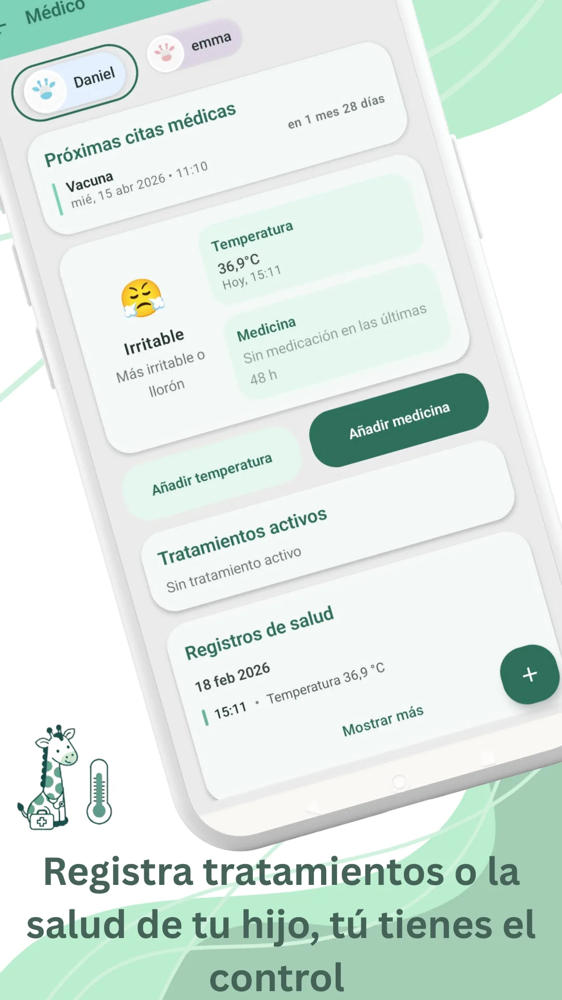

En esta página · 7 secciones
En pocas palabras
La mayoría de los niños dicen sus primeras palabras hacia los 12 meses, tienen un vocabulario de unas 50 palabras o más hacia los 2 años y empiezan a juntar dos palabras en esa misma etapa. Antes de hablar, balbucean, señalan, se despiden con la mano y entienden mucho más de lo que dicen. Los ritmos son muy variables: una de cada cinco niños empieza a hablar más tarde que los demás de su edad. Si te preocupa, o si pierde palabras o habilidades que ya tenía, consúltalo con tu pediatra.
- Primeras palabras
- ~12 mesesuna o dos, como mamá o adiós
- A los 2 años
- 50+ palabrasy junta dos palabras
- Entender va primero
- Antes de hablarresponde a su nombre y a palabras sencillas
- Consulta si
- Pierde palabraso habilidades, a cualquier edad
Tabla por edades: sonidos, palabras, comprensión y gestos
Es una guía orientativa, no un examen. Muchos niños alcanzan cada hito hacia el final de su franja de edad, y eso también es normal. Las cifras de palabras solo las damos donde las fuentes las recogen.
| Edad | Sonidos y balbuceo | Palabras (aprox.) | Comprensión | Gestos |
|---|---|---|---|---|
| 0-3 meses | Hace sonidos suaves como «ooo», «aah» o «mmm» y los alterna contigo. | Aún ninguna. | Gira la cabeza o mira hacia las voces; se calma o sonríe cuando le hablas. | Las fuentes no señalan gestos específicos a esta edad. |
| 4-6 meses | Combina vocales, a veces con una consonante («aaagu», «daaa»). | Aún ninguna. | Responde a las expresiones de la cara y a juguetes que suenan. | Las fuentes no señalan gestos específicos a esta edad. |
| 7-9 meses | Balbucea en cadena: «mamama», «bababa». | Aún ninguna con significado claro. | Te mira cuando le llamas por su nombre y reconoce el nombre de algunas personas y objetos. | Levanta los brazos para que lo cojan; aparta lo que no quiere. |
| 10-12 meses | Intenta copiar los sonidos que haces. | 1-2 palabras, como «mamá», «papá», «hola» o «adiós». | Responde a palabras y frases sencillas como «adiós» o «mira a mamá». | Señala, saluda con la mano y enseña o da objetos. |
| 13-18 meses | Mezcla cadenas largas de sonidos, sílabas y palabras reales con entonación de habla. | Va sumando palabras; las fuentes no dan una cifra fija a esta edad. Entre 1 año y medio y 2 años aprende en torno a una palabra nueva por semana. | Sigue indicaciones como «dame la pelota» o «ven aquí» y mira alrededor cuando le preguntas «¿dónde está…?». Señala alguna parte del cuerpo. | Señala para pedir o enseñar; dice «no» y «sí» con la cabeza. |
| 18-24 meses | Su pronunciación aún puede ser poco clara («du» por «zapato»). | 50 o más palabras al llegar a los 2 años, y empieza a juntar dos («más agua»). | Sigue órdenes de dos pasos, como «coge la cuchara y ponla en la mesa». | Las fuentes no añaden gestos nuevos a esta edad. |
| 24-36 meses | Se le entiende cada vez mejor, aunque quien no lo conoce puede no entenderlo todo (a los 2 años, un adulto suele entender en torno a la mitad). | Vocabulario que crece muy deprisa; pasa de frases de 2-3 palabras a otras más largas, con plurales y verbos («comiendo»). | Contesta preguntas sencillas y entiende casi todo lo que le dices. | Las fuentes no señalan gestos nuevos; pide tu atención con palabras («¡mírame!»). |
Apunta sus primeras palabras
Anota en el diario de Raffy sus primeras palabras y hitos con la fecha, y llévalos a la próxima revisión con tu pediatra.

Cuándo no preocuparse
- Los rangos son amplios. Los hitos de la tabla son orientativos: uno de cada cinco niños aprende a hablar más tarde que los de su edad.
- Entender va antes que hablar. A los 12 meses muchos niños responden a palabras sencillas antes de poder decir muchas. Que entienda, mire cuando le llamas y señale pesa tanto como las palabras que dice.
- Gestos, gruñidos y una sola palabra cuentan. Señalar o decir «¿Fuera?» con tono de pregunta ya es comunicarse.
- Niños, niñas y hermanos. La AAP señala que, en promedio, los niños suelen empezar a hablar un poco más tarde que las niñas, pero la diferencia se iguala hacia la edad escolar. Ni ella ni las demás fuentes fijan hitos distintos por sexo u orden de nacimiento (como que el segundo hable antes por tener hermano mayor), así que usa la tabla como guía.
- No entenderle todo es normal. A los 2 años es normal que se le entienda solo la mitad.
Niños bilingües o que oyen varios idiomas
Usar varios idiomas no confunde a los niños ni causa retrasos del lenguaje. Los niños que crecen con más de un idioma dicen sus primeras palabras hacia el año y juntan dos palabras hacia los 2 años, igual que el resto.
- Pueden mezclar idiomas. Combinar palabras o reglas de dos idiomas en una misma frase es una parte esperada de aprender más de uno a la vez.
- Un problema real se nota en todos sus idiomas. Si hay un problema de comunicación, aparece en todos los idiomas que usa; si te preocupa, consulta con un logopeda.
- Cuantas más veces oiga y practique, en el idioma que sea, mejor se desarrollará su lenguaje.
Seguridad pediátrica: cuándo consultar al pediatra
- Pierde palabras o habilidades que ya tenía, a cualquier edad. Pide cita pronto.
- No responde cuando le llamas por su nombre o parece no reaccionar a algunos sonidos: pide que le revisen la audición.
- Hacia los 12 meses no usa gestos, como señalar o despedirse con la mano.
- Hacia los 18 meses prefiere los gestos a los sonidos y le cuesta imitar sonidos.
- A los 2 años no junta dos palabras, no sigue instrucciones sencillas o solo repite lo que oye sin decir palabras propias.
- Parece vivir en su mundo o prefiere jugar solo, como si no te oyera.
- Hay algo que no te cuadra, aunque no esté en esta lista: si te preocupa, no esperes.
Este artículo es educativo, no es una herramienta de cribado ni de diagnóstico y no sustituye la valoración de tu pediatra. Si hay una preocupación, el pediatra puede pedir una prueba de audición y derivarte a un logopeda.
Cómo estimular el lenguaje en casa
- Háblale mirándole a la cara, con voz cantarina y nombrando lo que ambos veis; añade más detalle a medida que crece.
- Lee con él desde los primeros meses. No hace falta leer las palabras: basta con hablar de las imágenes.
- Narra lo que haces mientras le das de comer, le cambias el pañal, le bañas, cocinas o limpias.
- Canta canciones y rimas con gestos, y túrnate con él: respóndele cuando balbucea, como en una conversación.
- Menos ruido de fondo. La tele o la radio puestas de fondo hacen más difícil escuchar; apágalas cuando juguéis o habléis.
Y sobre todo, disfruta de esos ratos juntos: no hace falta «enseñarle» palabras como en una clase.
Si quieres repasar también lo que hace tu bebé antes de hablar, mira nuestra guía de hitos del desarrollo del primer año.
Preguntas frecuentes
¿Cuántas palabras debería decir mi bebé al año?
Entre una y dos, como «mamá», «papá», «hola» o «adiós». Si aún no dice ninguna pero ya señala, se despide con la mano y responde a palabras sencillas, coméntalo en la revisión; el pediatra valorará su caso.
¿Cuántas palabras debería decir a los 2 años?
La mayoría dice unas 50 palabras o más y empieza a juntar dos, como «más agua» o «vamos fuera». Algunos niños sanos van más despacio; si a los 2 años no junta palabras, consúltalo con tu pediatra.
¿Entender es lo mismo que hablar?
No. Los niños entienden bastante antes de poder decirlo. Que responda a su nombre, siga órdenes sencillas y señale cosas es una buena señal aunque aún diga pocas palabras.
¿Los niños hablan más tarde que las niñas?
La AAP señala que, en promedio, los niños suelen empezar a hablar un poco más tarde que las niñas, pero la diferencia se iguala hacia la edad escolar. Ni ella ni las demás fuentes fijan hitos distintos por sexo, así que usa la tabla como guía. Lo importante es que avance, no la comparación con otros niños.
¿Criar a mi hijo en dos idiomas retrasa su lenguaje?
No. Usar varios idiomas no confunde a los niños ni causa retrasos del lenguaje. Los niños bilingües dicen sus primeras palabras y juntan dos palabras a edades similares a las de los demás.
¿Tengo que pedir una prueba de audición si habla poco?
Si te preocupa cómo habla, es razonable que el pediatra revise también su audición, porque oír mal afecta a decir, entender e imitar palabras. Comenta si no responde a su nombre o a algunos sonidos.
Fuentes
- American Speech-Language-Hearing Association (ASHA)Communication milestones: birth to 1 year (en inglés)
- American Speech-Language-Hearing Association (ASHA)Communication milestones: 13 to 18 months (en inglés)
- American Speech-Language-Hearing Association (ASHA)Communication milestones: 19 to 24 months (en inglés)
- American Speech-Language-Hearing Association (ASHA)Communication milestones: 2 to 3 years (en inglés)
- ASHA · Helping You CommunicateLearning more than one language (en inglés)
- American Academy of Pediatrics · HealthyChildren.orgLanguage delay (en inglés)
- American Academy of Pediatrics · HealthyChildren.orgLanguage development: 2-year-olds (en inglés)
- American Academy of Pediatrics · HealthyChildren.orgLanguage development: 1-year-olds (en inglés)
- NHS (Reino Unido)Help your baby learn to talk (en inglés)
- Nemours KidsHealthRetraso en el desarrollo del habla o del lenguaje
- Pediatrics (AAP) · Zubler et al., 2022 · PMID 35132439Evidence-Informed Milestones for Developmental Surveillance Tools (en inglés)
Revisamos este artículo con estas fuentes el 22 nov 2026. Es contenido educativo, no consejo médico. Política editorial